Tabelltrekk er et standardisert system for beregning av forskuddstrekk og andre skattemessige trekk basert på forhåndsbestemte tabeller. Dette systemet forenkler lønnskjøring og sikrer korrekt skattetrekk for både arbeidsgivere og arbeidstakere. Tabelltrekk er fundamentalt for lønnsadministrasjon og har direkte påvirkning på skattetrekkskontoen og skatteregler.
Seksjon 1: Grunnleggende om Tabelltrekk
Tabelltrekk er skattemyndighetenes offisielle metode for å beregne hvor mye skatt som skal trekkes fra lønn og andre skattepliktige utbetalinger. Systemet bygger på forhåndsberegnede tabeller som tar hensyn til skattetrinn, fradrag og andre skattemessige forhold.
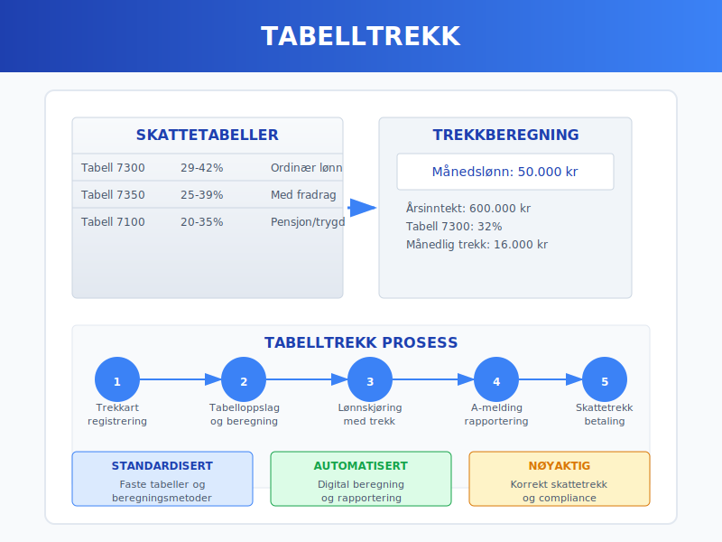
1.1 Historisk Utvikling
Tabelltrekk-systemet har utviklet seg betydelig siden innføringen:
Tidslinje for tabelltrekk:
| År | Endring | Betydning |
|---|---|---|
| 1960-tallet | Innføring av tabellsystem | Standardisert trekkberegning |
| 1990-tallet | Digitalisering | Automatiserte beregninger |
| 2000-tallet | A-ordningen | Integrert rapportering |
| 2020-tallet | Real-time beregning | Økt presisjon og fleksibilitet |
1.2 Juridisk Grunnlag
Tabelltrekk er regulert gjennom:
- Skatteforvaltningsloven § 5-2 om forskuddstrekk
- Forskrift om skattetrekk med detaljerte beregningsregler
- Årlige trekkveildninger fra Skatteetaten
- A-ordningen for rapportering av lønns- og trekkopplysninger
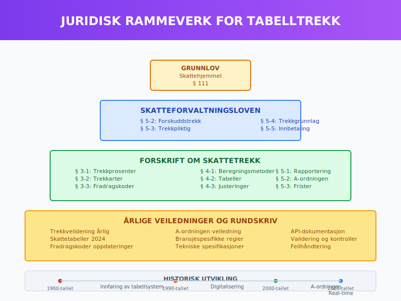
Seksjon 2: Trekkarten og Skattetabeller
2.1 Trekkarten og Registrering
Trekkarten er grunnlaget for korrekt skattetrekk:
Sentrale komponenter:
- Trekk-prosent basert på forventet årslønn
- Fradragskoder for standardfradrag og særfradrag
- Frikort for lavt- og ikke-skattepliktige inntekter
- Trekkplikt på tilleggsinntekter
Registreringsprosess:
- Arbeidstaker sender trekkart til arbeidsgiver
- Arbeidsgiver registrerer opplysningene i lønnssystem
- Lønnssystem beregner trekk basert på tabeller
- Rapportering til Skatteetaten via A-melding
2.2 Skattetabeller og Beregningsmetoder
Skattetabellene er organisert etter ulike inntektsnivåer og fradrag:
Tabellstruktur (2024):
| Tabell | Anvendelse | Trekk-prosent |
|---|---|---|
| 7300 | Ordinær inntekt, ingen særfradrag | 29-42% |
| 7350 | Ordinær inntekt med minstefradrag | 25-39% |
| 7370 | Høy inntekt, maksimalt særfradrag | 35-45% |
| Tabell 7100 | Pensjon og trygd | 20-35% |
Beregningseksempel:
Månedslønn: 50.000 kr
Trekkgrunnlag = 50.000 × 12 = 600.000 kr/år
Tabell 7300: Trekk-prosent ≈ 32%
Månedlig trekk: 50.000 × 32% = 16.000 kr
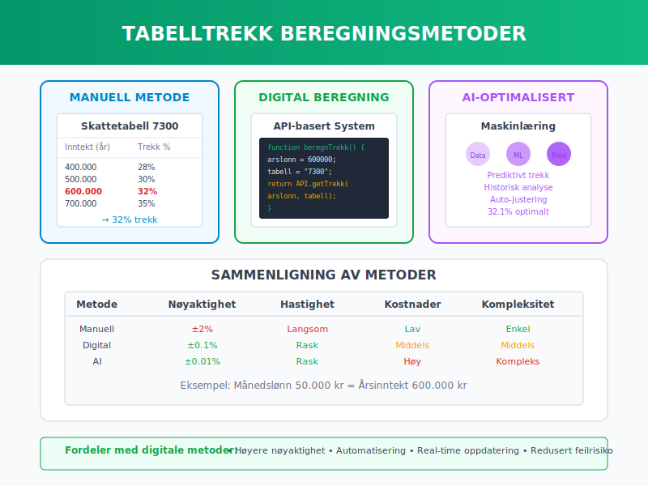
2.3 Digitale Beregningsverktøy
Moderne lønnssystemer implementerer automatisert tabelltrekk:
Tekniske funksjoner:
- Sanntids tabelloppslag fra Skatteetatens API
- Automatisk oppdatering ved endringer i skattetabeller
- Validering av trekkart-opplysninger
- Backup-beregninger ved systemfeil
Implementering i lønnssystem:
function beregnTabelltrekk(bruttolonnPerManed, trekkartData) {
const arslonn = bruttolonnPerManed * 12;
const tabell = trekkartData.tabellnummer;
const trekkprosent = hentTrekkprosentFraTabell(tabell, arslonn);
return bruttolonnPerManed * (trekkprosent / 100);
}
Seksjon 3: Fradragskoder og Særfradrag
3.1 Standard Fradragskoder
Fradragskoder reduserer skattetrekket basert på dokumenterte kostnader:
Vanlige fradragskoder:
| Kode | Beskrivelse | Maksimalt beløp |
|---|---|---|
| 132 | Reise mellom hjem og arbeid | Kr 97.610 (2024) |
| 213 | Fagforeningskontingent | Kr 6.000 |
| 301 | Renteutgifter på egen bolig | Ubegrenset |
| 504 | Gaver til veldedige formål | 25.000 kr |
3.2 Beregning av Særfradrag
Særfradrag påvirker tabelltrekket direkte:
Beregningsformel:
Justert trekk = Standard trekk - (Særfradrag × Marginal skattesats)
Eksempel:
Standard månedstrekk: 15.000 kr
Reisefradrag: 50.000 kr/år (≈ 4.167 kr/måned)
Marginal skattesats: 35%
Reduksjon: 4.167 × 35% = 1.458 kr
Justert trekk: 15.000 - 1.458 = 13.542 kr/måned
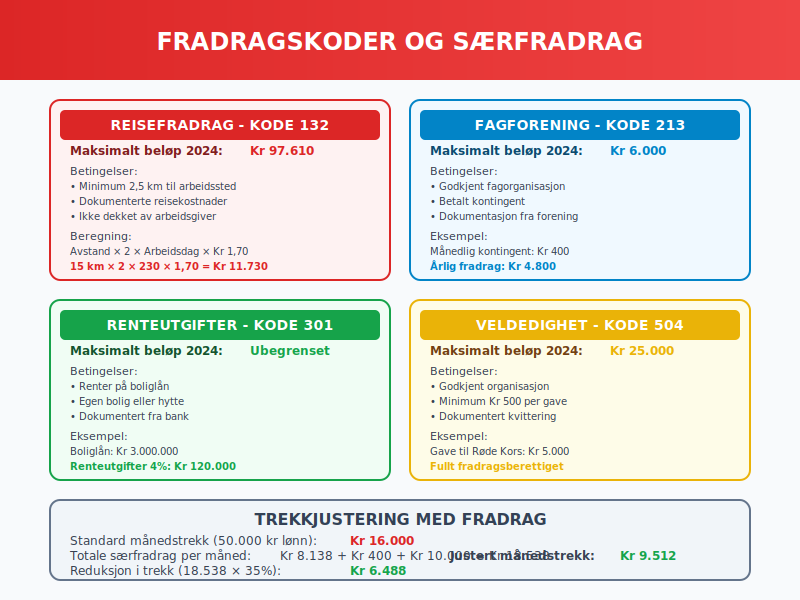
3.3 Administrasjon av Fradrag
Arbeidsgiveres ansvar for fradragshåndtering:
Prosess for fradragsregistrering:
- Mottak av dokumentasjon fra arbeidstaker
- Validering av fradragsgrunnlag
- Registrering i lønnssystem
- Månedlig beregning og justering
- Årlig avstemming mot skattemeldingen
Dokumentasjonskrav:
- Kvitteringer for faktiske utgifter
- Avtaledokumenter for løpende fradrag
- Bekreftelser fra tredjeparter (fagforeninger etc.)
- Egenerklæringer for standardfradrag
Seksjon 4: Tabelltrekk for Ulike Inntektstyper
4.1 Lønnsinntekt
Ordinær lønn følger standard tabelltrekk-prosedyrer:
Komponenter som inngår:
- Grunnlønn og faste tillegg
- Variable tillegg (overtid, provisjon)
- Naturalytelser (firmabil, telefon)
- Bonuser og gratifikasjoner
Regnskapsføring av lønnstrekk:
Debet: Lønnskostnad 100.000 kr
Kredit: Skyldig lønn 68.000 kr
Kredit: Skyldig skattetrekk 25.000 kr
Kredit: Skyldig pensjon 7.000 kr
4.2 Pensjon og Trygdeutbetalinger
Pensjonsutbetalinger har egne trekktabeller:
Særlige forhold:
- Lavere trekk-prosent enn lønnsinntekt
- Minstefradrag for pensjonister
- Standardfradrag for alder over 67 år
- Redusert sykepenger-trekk
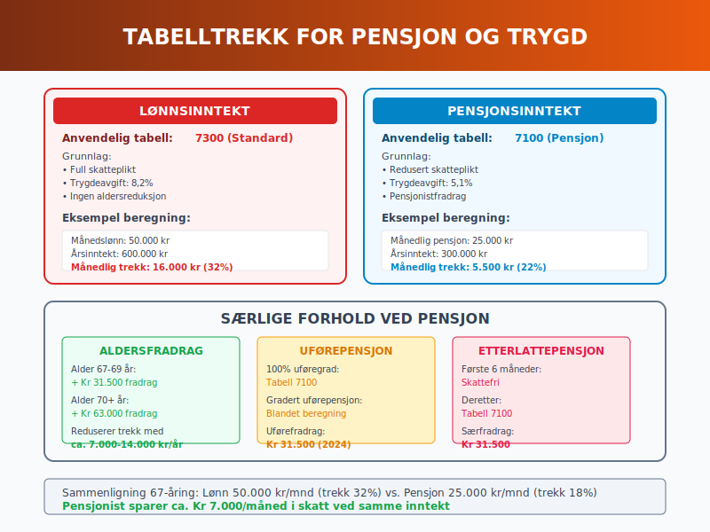
4.3 Honorar og Frilansing
Freelancere og konsulenter møter særlige trekkutfordringer:
Trekkplikt-vurdering:
| Situasjon | Trekkplikt | Trekkprosent |
|---|---|---|
| Fast oppdragsgiver (>50% av inntekt) | Ja | Standard tabeller |
| Sporadiske oppdrag | Nei | Egen forskuddsskatt |
| Kunstnerhonorar | Ja | 15% trekk |
| Foredragshonorar | Ja | 25% trekk |
Vurdering av trekkplikt:
If oppdragsverdi > kr 1.000 AND
relasjon > 3 måneder THEN
trekkplikt = true
Seksjon 5: Forskuddsskatt og Etterskuddsskatt
5.1 Forskuddsskatt-systemet
Forskuddsskatt sikrer jevn skatteinnbetaling gjennom året:
Beregningskomponenter:
- Forventet årsinntekt basert på lønn og andre kilder
- Standardfradrag og dokumenterte særfradrag
- Formuesskatt på netto formue over 20 millioner kr
- Trygdeavgift på lønn og pensjonsinntekt
Forskuddsskatt-beregning:
Årlig forskuddsskatt = (Forventet inntekt - Fradrag) × Skattesats
Månedlig forskuddsskatt = Årlig forskuddsskatt ÷ 12
5.2 Etterskuddsskatt og Justeringer
Etterskuddsskatt oppstår ved forskjeller mellom forskudd og faktisk skatt:
Vanlige årsaker:
- Høyere inntekt enn forventet
- Reduserte fradrag i forhold til trekkart
- Variabel inntekt (bonus, utbytte)
- Manglende rapportering av tilleggsinntekter
Justeringsmekanismer:
| Tidspunkt | Metode | Frist |
|---|---|---|
| Løpende år | Endring av trekkart | Umiddelbart |
| Etter årsskifte | Skattemelding | 31. mai |
| Revisjonsperiode | Endring/tilleggsligninger | 3-6 år |
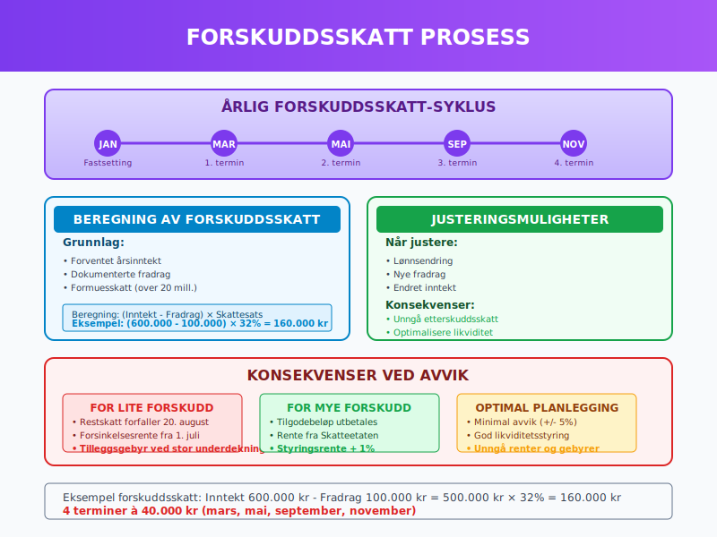
5.3 Rentekompensasjon og Gebyrer
Skatteetaten betaler renter ved for mye forskuddsbetaling:
Renteberegning:
- Rentesats: Norges Banks styringsrente + 1%
- Renteperiode: Fra forfallsdato til utbetaling
- Minstebeløp: Kr 200 for renteutbetaling
- Skattlegging: Renter er skattepliktig inntekt
For lite forskuddsbetaling medfører:
- Restskatt med forfalltid 20. august
- Forsinkelsesrenter ved sen betaling
- Tilleggsgebyr ved stor underdekning
Seksjon 6: A-ordningen og Digital Rapportering
6.1 A-melding og Tabelltrekk
A-ordningen integrerer lønns- og trekkrapportering:
Måntlige rapporter inkluderer:
- Utbetalte beløp per arbeidstaker
- Skattetrekk basert på tabelltrekk-beregninger
- Arbeidsgiveravgift på utbetalingene
- Pensjonspremie og andre trekk
A-meldingsstruktur:
<Inntektsmottaker>
<PersonId>01010112345</PersonId>
<Inntekt>
<BeloepSumBrutto>50000</BeloepSumBrutto>
<SkattegrunnlagSumTrekkpliktig>50000</SkattegrunnlagSumTrekkpliktig>
<SkattetrektSum>16000</SkattetrektSum>
</Inntekt>
</Inntektsmottaker>
6.2 Systemmintegrasjon
Moderne lønnssystemer kommuniserer direkte med skattemyndighetene:
API-funksjoner:
- Validering av organisasjonsnummer og personnummer
- Oppslag i aktuelle skattetabeller
- Automatisk innsending av A-melding
- Mottaksbekreftelse og feilhåndtering
Kvalitetssikring:
- Kontroll av personidentifikasjon
- Validering av trekkart-opplysninger
- Sammenligning med foregående periode
- Avstemming mot bank og skattetrekkskonto
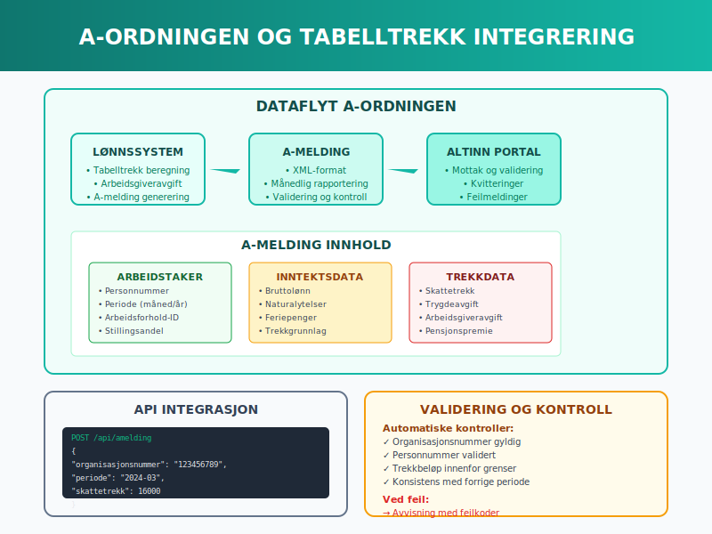
6.3 Fremtidig Utvikling
Digitalisering av tabelltrekk-systemet:
Teknologiske trender:
- Sanntids-beregning basert på løpende inntekt
- Maskinlæring for optimalisert trekkprosent
- Blockchain for sporbarhet og transparens
- API-økonomi for sømløs datautveksling
Forventet effekt:
- Redusert etterskuddsskatt gjennom presise beregninger
- Lavere administrasjonkostnader for arbeidsgivere
- Økt compliance gjennom automatisering
- Bedre brukeropplevelse for arbeidstakere
Seksjon 7: Bransjespesifikke Trekkordninger
7.1 Bygg- og Anleggsbransjen
Byggebransjen har særlige utfordringer med tabelltrekk:
Spesielle forhold:
- Sesongvariasjoner i arbeidsmengde og lønn
- Skiftende arbeidsplasser og reisekostnader
- Korttidskontrakter og midlertidige ansettelser
- Utsendte arbeidstakere fra andre land
Trekkberegning for byggearbeidere:
If arbeidssted > 50 km fra bolig THEN
reisefradrag = faktiske_kostnader OR standard_diett
justertTrekk = standardTrekk - (reisefradrag × 0.35)
7.2 Transport og Logistikk
Transportbransjen har komplekse trekkforhold:
Utfordringsområder:
- Diett og losjikostnader ved lange turer
- Uregelmessige arbeidstider og overtidsbetaling
- Bilgodtgjørelse og kjøregodtgjørelse
- Internasjonale turer og grenseoverskridende skatt
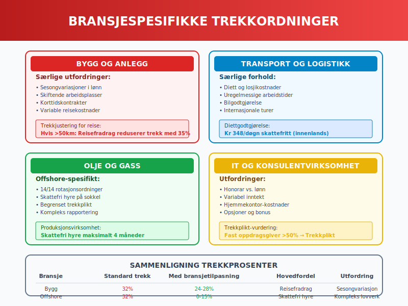
7.3 Olje- og Gassindustrien
Petroleumssektoren har unike trekkordninger:
Offshore-spesifikt:
- 14/14 rotasjonsordninger påvirker trekkberegning
- Skattefri hyre på kontinentalsokkelen
- Begrenset trekkplikt for utenlandske arbeidstakere
- Kompleks rapportering til både norske og utenlandske myndigheter
Offshore trekkberegning:
| Aktivitet | Trekkstatus | Særbestemmelser |
|---|---|---|
| Produksjonsvirksomhet | Skattefri hyre | Maksimalt 4 måneder |
| Leteboring | Normal trekk | Standard tabeller |
| Vedlikehold og service | Delvis fritak | Avhenger av varighet |
Seksjon 8: Feilkilder og Korrigeringer
8.1 Vanlige Feil i Tabelltrekk
Systematiske feil som påvirker trekkberegninger:
Hyppige problemområder:
- Feil trekkart-registrering ved ansettelse
- Manglende oppdatering ved lønnsendringer
- Inkorrekt koding av naturalytelser
- Retrospektive justeringer som ikke fanges opp
Feildeteksjon:
def kontrollerTabelltrekk(bruttolonnData, trekkData):
if abs(trekkData - beregnForventetTrekk(bruttolonnData)) > 0.05 * bruttolonnData:
return "AVVIK_DETEKTERT"
return "OK"
8.2 Korrigering av Trekk-feil
Rettefrist og korrigering av feilaktig trekk:
Korrigeringsprosess:
- Identifisering av feil i månedlig avstemming
- Beregning av korrekt trekk-beløp
- Justering i neste lønnskjøring
- Supplerende A-melding til Skatteetaten
- Dokumentasjon av korrigeringen
Regnskapsføring av trekkjustering:
Debet/Kredit: Skyldig skattetrekk (differanse)
Kredit/Debet: Skyldig lønn (motkonto)
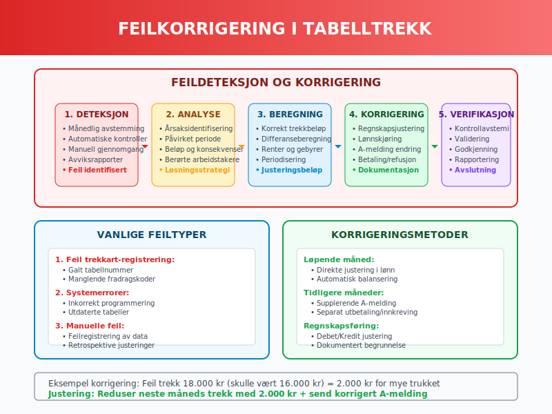
8.3 Kvalitetssikring og Kontroller
Systematisk kvalitetssikring forebygger feil:
Kontrollrutiner:
- Månedlig avstemming av trekk-beløp
- Kontroll av trekkart-endringer
- Sammenligning med bransjebenchmarks
- Validering av fradragsdokumentasjon
- Review av A-melding før innsending
Automatiserte kontroller:
- Outlier-deteksjon for unormale trekkprosenter
- Konsistenssjekk mellom perioder
- Validering mot Skatteetatens tabeller
- Cross-reference med HR-systemer
Seksjon 9: Internasjonale Aspekter
9.1 Utenlandske Arbeidstakere
Trekkplikt for ikke-norske ansatte:
Vurderingskriterier:
- Skatteplikt til Norge basert på oppholdsvarighet
- Skatteavtaler kan påvirke trekkplikten
- Sertifikat for redusert trekk fra hjemland
- Dokumentasjon av utenlandsk skattlegging
Trekkprosenter for utlendinger:
| Status | Trekkprosent | Forutsetninger |
|---|---|---|
| Bosatt i Norge | Standard tabeller | Normal skatteplikt |
| Ikke bosatt, skattepliktig | 25% flat rate | Begrenset skatteplikt |
| SINK-ordningen | 25% på nettoinntekt | Særlige vilkår |
| Skatteavtale-fritak | 0% | Gyldig attest |
9.2 Utsendte Norske Arbeidstakere
Norske ansatte i utlandet har spesielle trekkordninger:
Utland-spesifikt:
- Befrielse for trekkplikt ved langvarig utenlandsopphold
- Svalbard-ordningen med redusert skatt
- Diplomater og konsulatansatte har særstatus
- Petroleumsvirksomhet på kontinentalsokkelen
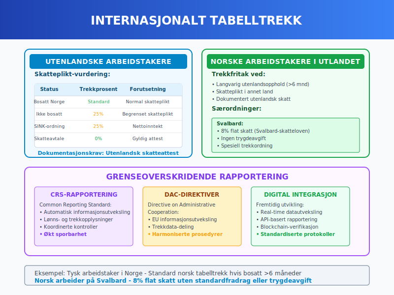
9.3 Digital Rapportering på Tvers av Grenser
Automatisk informasjonsutveksling påvirker trekkberegninger:
CRS og DAC-rapportering:
- Common Reporting Standard for finansielle kontoer
- Automatisk utveksling av lønns- og trekkopplysninger
- Koordinerte kontroller mellom skattemyndigheter
- Økt sporbarhet av internasjonale arbeidsforhold
Seksjon 10: Teknologi og Automatisering
10.1 Moderne Lønnssystemer
Skybaserte løsninger transformerer tabelltrekk-håndtering:
Teknologiske funksjoner:
- Real-time API-integrasjon med Skatteetaten
- Maskinlæring for trekkoptimalisering
- Automatisk oppdatering av skattetabeller
- Intelligent validering av trekkart-data
Arkitektur for moderne tabelltrekk:
graph TD
A[Lønnssystem] --> B[Skatteetaten API]
A --> C[Trekkart Database]
A --> D[Beregningsmotor]
D --> E[Valideringsmotor]
E --> F[A-melding]
F --> B
10.2 Artificial Intelligence i Trekkberegning
AI-algoritmer optimaliserer skattetrekk:
Machine Learning anvendelser:
- Prediktiv modellering av årsinntekt
- Automatisk justering av trekkprosent
- Anomali-deteksjon for uvanlige trekkmønstre
- Personaliserte anbefalinger for trekkart-endringer
AI-modell for trekkoptimalisering:
def optimerTrekk(historiskInntekt, prognosertInntekt, risikoProfile):
model = MachineLearningModel()
model.train(historiskInntekt)
optimal_trekk = model.predict(prognosertInntekt, risikoProfile)
return optimal_trekk
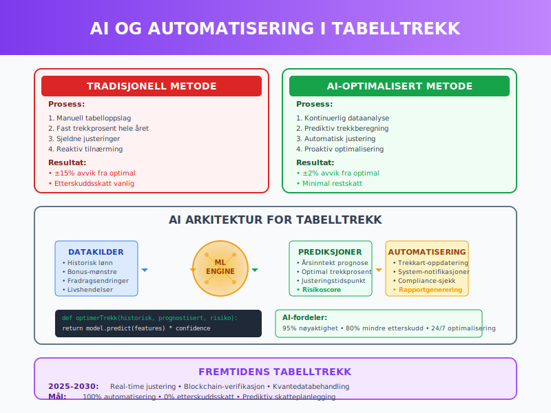
10.3 Blockchain og Smart Contracts
Distribuert teknologi for trekkadministrasjon:
Blockchain-fordeler:
- Uforanderlig dokumentasjon av trekkberegninger
- Smart contracts for automatisk trekkjustering
- Transparent rapportering til alle parter
- Redusert administrasjonsbehov
Smart contract eksempel:
contract TabelltrekkContract {
function beregnTrekk(uint bruttoLonn, uint trekkprosent)
public pure returns (uint) {
return (bruttoLonn * trekkprosent) / 100;
}
}
Seksjon 11: Fremtiden for Tabelltrekk
11.1 Digitale Trekkart og Real-time Justering
Neste generasjon trekkart-administrasjon:
Innovasjoner under utvikling:
- Digital identitet integrert med BankID
- Sanntids inntektsdata fra alle arbeidsgivere
- Automatisk trekkjustering basert på faktisk inntekt
- Prediktiv skatteberegning for neste år
Fremtidig trekkberegning:
Real-time trekk = f(løpende_årslønn, prognostisert_restlønn,
faktiske_fradrag, livshendelser)
11.2 Integrert Økosystem
Helhetlig platform for skatteadministrasjon:
Systemintegrasjon:
- HR-systemer deler data direkte med Skatteetaten
- Bank-APIs for automatisk trekkbetaling
- Regnskapssystemer får real-time oppdateringer
- Privat-økonomi apps viser prognose for skatteoppgjør
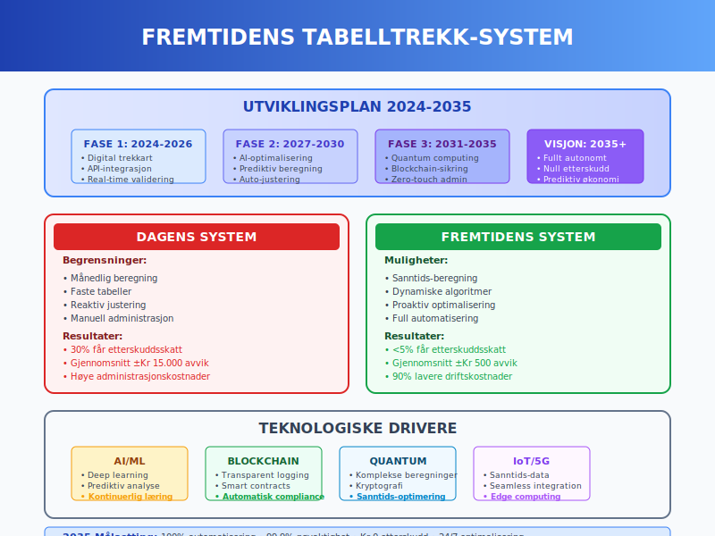
11.3 Bærekraft og Miljøperspektiv
Grønn digitalisering av trekkadministrasjon:
Miljøgevinster:
- Papirfri trekkart og dokumentasjon
- Reduserte reiser gjennom digital selvbetjening
- Energieffektive skybaserte beregninger
- Mindre fysisk arkivering av dokumenter
Målsettinger:
- 100% digital trekkart-håndtering innen 2030
- 50% reduksjon i administrasjonskostnader
- Nullutslipp fra tabelltrekk-administrasjon
- Real-time skatteoppgjør uten årsoppgjør
Seksjon 12: Praktiske Verktøy og Ressurser
12.1 Tabelltrekk-kalkulatorer
Digitale verktøy for trekkberegning:
Offisielle kalkulatorer:
| Verktøy | Bruksområde | Tilgang |
|---|---|---|
| Skatteetaten.no kalkulator | Personlig trekkberegning | Gratis online |
| Arbeidsgiver-portal | Bulk trekkberegning | Avgiftspliktig |
| Lønnssystem-API | Automatisk beregning | Kommersielt |
| Mobile apps | Rask sjekk | Gratis/betalt |
12.2 Dokumentasjon og Oppbevaring
Systematisk arkivering av trekkdata:
Oppbevaringskrav:
- Trekkart og endringsdokumentasjon (10 år)
- Fradragsdokumentasjon (5 år)
- Lønns- og trekkspesifikasjon (10 år)
- A-meldinger og mottaksbekreftelser (10 år)
Digital arkivering:
Filstruktur:
/TrekkarkDocuments/
/2024/
/Trekkart/
/Fradrag/
/A-meldinger/
/Korrigeringer/
12.3 Compliance og Revisjonsverktøy
Verktøy for sikring av korrekt tabelltrekk:
Kvalitetssikringslister:
- Månedlig avstemming av trekk mot tabeller
- Kvartalsvis review av fradragsdokumentasjon
- Årlig validering av trekkart-database
- Kontinuerlig oppdatering av skattetabeller
Revisjonsrapporter:
- Trekk-avviksrapport med årsaker og korrigeringer
- Fradragskontroll med dokumentasjonsvalidering
- A-melding status med innsendelseshistorikk
- Prognoser for årsoppgjør og eventuelle justeringer
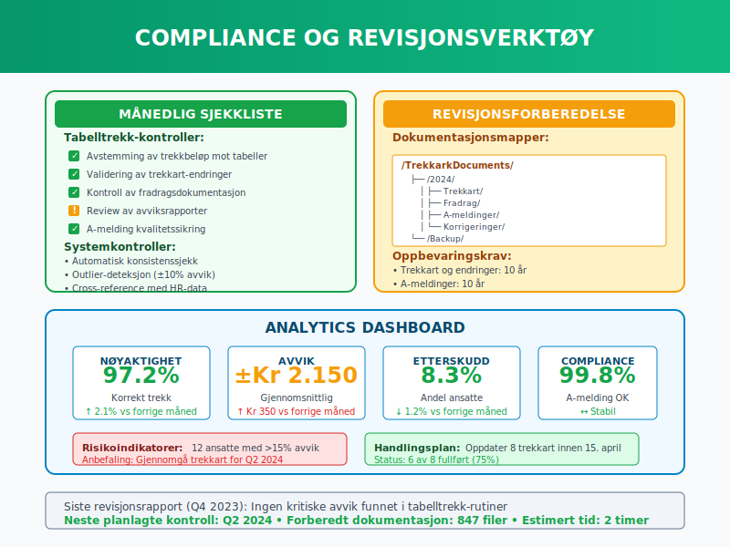
Konklusjon
Tabelltrekk representerer kjernen i Norges skattetrekk-system og er essensielt for effektiv lønnsadministrasjon. Systemet har utviklet seg fra manuelle tabelloppslag til sofistikerte digitale plattformer som sikrer korrekt skattetrekk for millioner av norske arbeidstakere.
Viktige erkjennelser:
- Automatisering reduserer feil: Moderne lønnssystemer med API-integrasjon mot Skatteetaten minimerer manuelle feil
- Compliance er kritisk: Korrekt håndtering av tabelltrekk er avgjørende for å unngå bøter og etterbetalinger
- Teknologi driver effektivitet: AI og maskinlæring optimaliserer trekkberegninger og reduserer administrativt arbeid
- Digital transformasjon fortsetter: Fremtiden bringer real-time trekkjusteringer og helt automatiserte systemer
Strategiske anbefalinger:
For arbeidsgivere er det essensielt å investere i moderne lønnssystemer som håndterer tabelltrekk automatisk og sikrer compliance med A-ordningen. Regnskapsførere bør holde seg oppdatert på endringer i skattetabeller og fradragsregler, mens HR-avdelinger må sikre korrekt trekkart-registrering og dokumentasjon.
Fremtidsperspektiv:
Tabelltrekk-systemet vil fortsette å digitaliseres med mål om real-time skatteoppgjør uten tradisjonelt årsoppgjør. Integration med AI, blockchain og IoT vil skape et sømløst økosystem hvor skattetrekk justeres automatisk basert på faktisk inntekt og personlige forhold.
Korrekt forståelse og implementering av tabelltrekk er ikke bare et regnskapsteknisk krav - det er en strategisk kompetanse som påvirker kontantstrøm, arbeidsgiverkostnader, medarbeidertilfredsheten gjennom forutsigbar og korrekt lønnsutbetaling, samt halv skatt i ferie- og høytidssesonger.